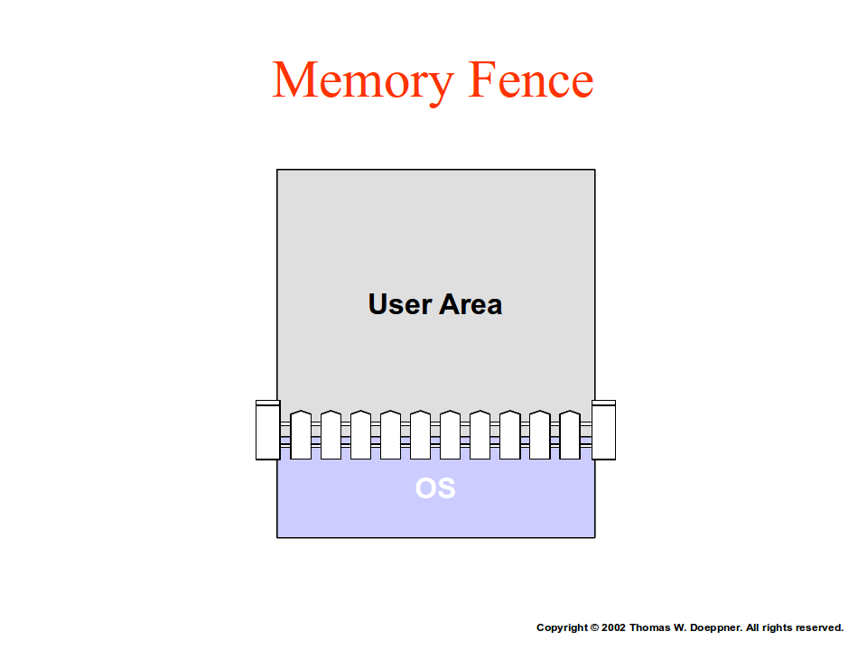
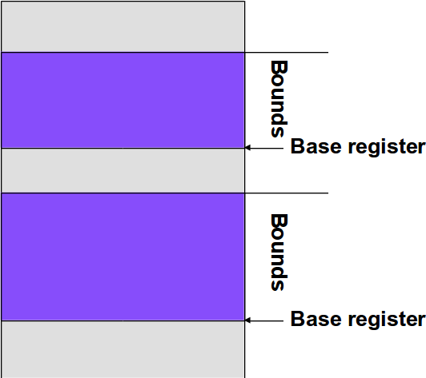
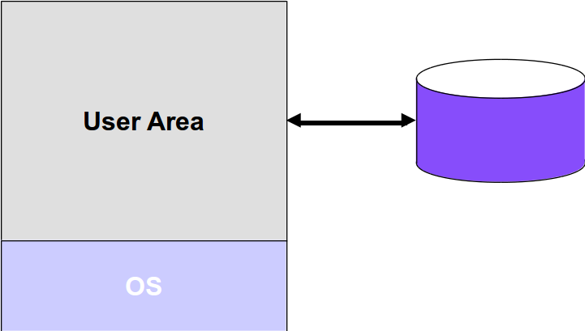
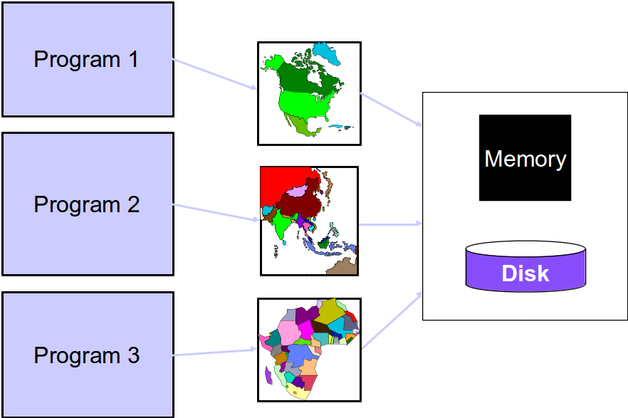
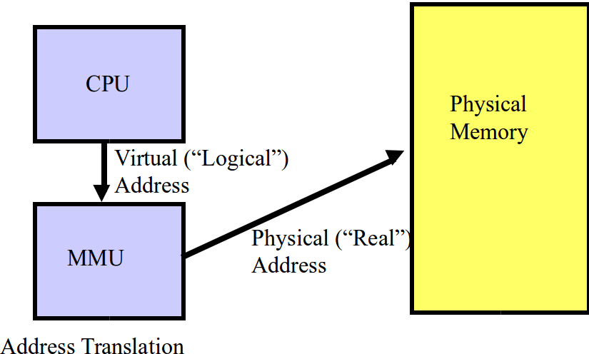
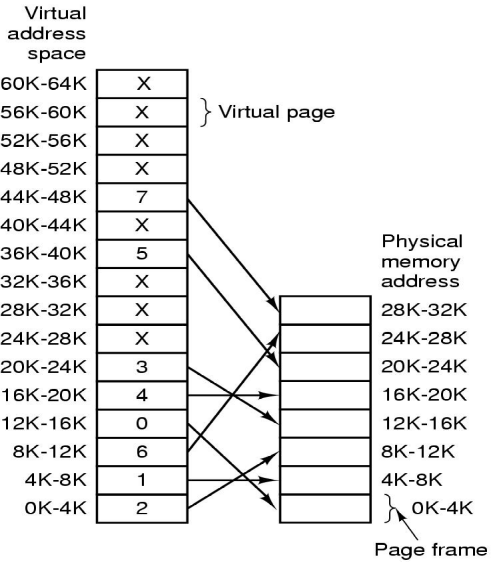
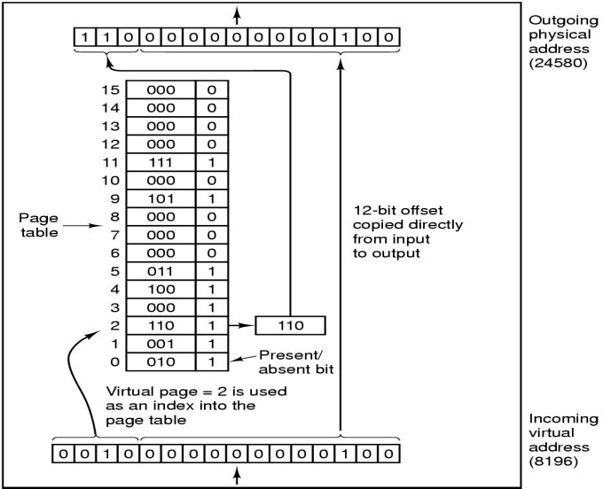
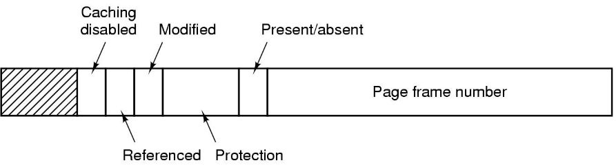

Present the ideal world view to the programmer, yet implement it on a real system
Simple Memory Management
One program at a time (not ideal for performance)
What does running a program involve?
Load program into memory
Jump to the first instruction
Issues:
Need to protect the OS from the user program
Relocation: User memory references should lead to real memory locations
Memory Fence

The Relocation Problem
Your Program is complied and linked
Generates (absolute) addresses
When being loaded into memory, can't predict which address it will be loaded in
How to ensure correct memory addresses are used, and to manage protection?
One solution: at loading time, update all the addresses to reflect correct physical addresses
Still does not ensure protection
Address Space
The Address Space Concept
Protect processes from one another
Protect the OS from user processes
Provide efficient management of available storage
Base and Bounds Registers

Swapping

Address Space
Each process has it's own "address space" - set of addresses the program generates
Memory Manager maps the address space onto Physical Memory + Secondary Storage
Address spaces of different processes don't overlap
Virtual Memory
Advantages of Virtual Memory
Program size can be larger than physical memory
Some pages in memory, some on the disk
Processes can run fast as long as all their active pages are in memory (compare with swapping)
Virtual Memory

Memory Management Unit (MMU)

Virtual memory
Process generates a "virtual address"
Virtual address is translated into a physical address (translation is more sophisticated than in base + bound registers)
Base + Bound: add and compare for every memory reference (Translation done differently for different processes)
Physical address goes onto the bus
Structuring Virtual Memory
Paging
divide the address space into fixed-size pages
Internal fragmentation
Segmentation
divide the address space into variable-size segments (typically each corresponding to some logical unit of the program, such as a module or subroutine)
External fragmentation
Paged segmentation
MMU - a closer look
Lookup the virtual address
If present in physical memory, they fetch it
If not, then call upon the operating system ("page fault")
OS loads the required page into memory from secondary storage
Instruction is re-started
Address Translation
Address Translation Problem
Given the virtual address
To find:
If in memory, the physical address
Else, answer saying "not in memory"
Constraint: Space overhead of translation should be small
Page Tables
64K Virtual Address Space
Divided into 16 pages, of 4K each
32K Physical Memory
8 pages of 4K each

Page Table

Page Fault
What if required page not in memory?
Page fault gives control to the OS
OS fetches it from the disk
Needs to evict an existing page from memory (page replacement policy)
Instruction is restarted
Typical Page Table Entry

Performance
The address translation is done on every memory reference
Maybe twice per instruction
Instruction fetch
Fetch Memory operand
The translation better be fast!
Different Schemes for Address Translation
Page Table - most popular
Translation Lookaside Buffer (TLB)
Performance reasons (cache)
Inverted Page Table
Large address spaces
Memory Management with Linked Lists
Maintaining a linked list of allocated and free memory segments